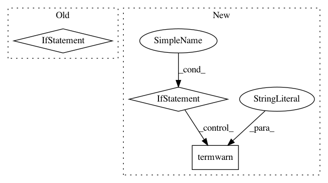

cf03844960278b258e4f9597af2a073ca711818e,wandb/sdk_py27/wandb_init.py,_WandbInit,init,#_WandbInit#,428
Before Change
pass
elif console == "mock":
pass
elif console == "file":
pass
elif console == "iowrap":
stdout_master_fd, stdout_slave_fd = io_wrap.wandb_pty(resize=False)
After Change
if s.reinit:
if len(self._wl._global_run_stack) > 0:
if len(self._wl._global_run_stack) > 1:
wandb.termwarn(
"If you want to track multiple runs concurrently in wandb you should use multi-processing not threads" // noqa: E501
)
wandb.join()
if s.mode == "noop":
// TODO(jhr): return dummy object
In pattern: SUPERPATTERN
Frequency: 4
Non-data size: 3
Instances
Project Name: wandb/client
Commit Name: cf03844960278b258e4f9597af2a073ca711818e
Time: 2020-07-27
Author: jeff@wandb.com
File Name: wandb/sdk_py27/wandb_init.py
Class Name: _WandbInit
Method Name: init
Project Name: wandb/client
Commit Name: cf03844960278b258e4f9597af2a073ca711818e
Time: 2020-07-27
Author: jeff@wandb.com
File Name: wandb/sdk/wandb_init.py
Class Name: _WandbInit
Method Name: init
Project Name: wandb/client
Commit Name: 11ac2d2e7b36492a92773c96ac93bfc232686a62
Time: 2020-08-19
Author: 1735971+davidwallacejackson@users.noreply.github.com
File Name: wandb/sdk_py27/wandb_init.py
Class Name: _WandbInit
Method Name: setup
Project Name: wandb/client
Commit Name: 11ac2d2e7b36492a92773c96ac93bfc232686a62
Time: 2020-08-19
Author: 1735971+davidwallacejackson@users.noreply.github.com
File Name: wandb/sdk/wandb_init.py
Class Name: _WandbInit
Method Name: setup